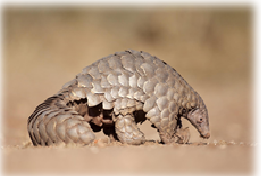

The Pangolin has large scales in it’s body and lives in tropical parts of Africa and Asia.
It is a nocturnal animal that uses it’s well-developed sense of smell to find insects.
Unfortunately Pangolins are hunted and used as food in many parts of Africa.
They are also in high demand in China because the scales are believed to soothe the abscess and improve blood circulation.
Due to these reasons and deforestation, the population of the Pangolin is greatly reduced.